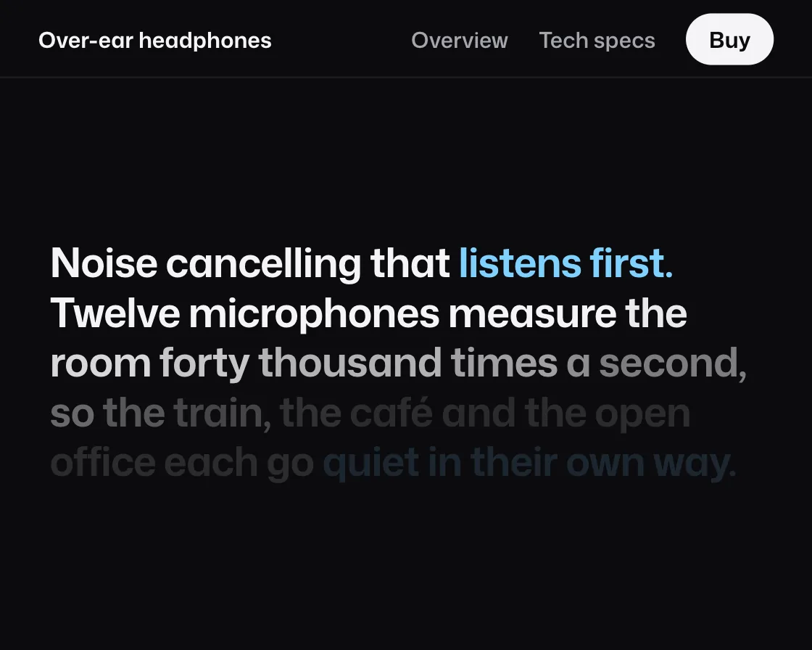

Scrub reveal
Scrub reveal is a DOM effect: words light up one by one, scrubbed by scroll. One plain JavaScript file with no dependencies; add it with npx motion-library add scrub-reveal.

Open it live, tune it and copy the code
What is Scrub reveal?
A product statement pins in place and lights up one word at a time as the page scrolls.
How does Scrub reveal work?
Progress through the pinned stretch maps to each word’s opacity, offset by its place in the sentence, so it tracks the scroll exactly in both directions.
How do I add Scrub reveal to my website?
- In your project folder, run
npx motion-library add scrub-reveal. It writesanimations/scrub-reveal.js. Needs Node 18 or newer. - Import it and call it with a container element that has a size:
import fx from './animations/scrub-reveal.js'; const stop = fx(document.querySelector('#hero')); - Call
stop()to clean up, for example when a component unmounts.
Every setting below is also a flag, so you can install it already tuned: npx motion-library add scrub-reveal --spread 1.
What settings can I tweak?
| Setting | Flag | Default | Range | Step |
|---|---|---|---|---|
| Spread | --spread | 0.35 | 0.05 to 1 | 0.05 |
Specifications
- Renderer
- DOM (CSS and the Web Animations API)
- Category
- Scroll
- Dependencies
- None
- File size
- 7.3 KB, unminified
- Interactive
- Yes: it follows scrolling
- Reduced motion
- Plays the same for everyone
- Licence
- MIT-0: use it anywhere, no credit needed
Source code
// Scrub reveal, on a headphones product page: the statement under the hero lights up word by word as the page scrolls past it, and dims again if you scroll back.
// Every word maps scroll progress to opacity, offset by its place in the sentence, so the reader sets the pace and the line can never run ahead of them. The page scrolls itself here, slowing through the statement, and a real wheel or swipe takes over.
const PARAMS = { spread: 0.35 };
export default function (stage) {
const AH = 340, MINW = 400;
const text = 'Noise cancelling that *listens first.* Twelve microphones measure the room forty thousand times a second, so the train, the café and the open office each go *quiet in their own way.*';
const root = document.createElement('div');
root.className = 'sr-root';
root.innerHTML = `<style>
.sr-root { position: absolute; inset: 0; overflow: hidden; background: #0b0b0d; color: #f4f4f6; font-family: "Mona Sans", system-ui, -apple-system, sans-serif; }
.sr-art { position: absolute; left: 0; top: 0; height: ${AH}px; transform-origin: 0 0; }
.sr-scroll { position: absolute; inset: 0; overflow-y: auto; overflow-x: hidden; scrollbar-width: none; }
.sr-scroll::-webkit-scrollbar { display: none; }
.sr-nav { position: sticky; top: 0; z-index: 2; height: 40px; display: flex; align-items: center; gap: 16px; padding: 0 20px; background: rgba(11,11,13,.82); box-shadow: 0 1px 0 #1d1d22; font-size: 11.5px; font-weight: 560; color: #a5a5ad; }
.sr-nav strong { margin-right: auto; color: #f4f4f6; font-weight: 650; }
.sr-nav b { color: #0b0b0d; background: #f4f4f6; padding: 5px 12px; border-radius: 999px; font-weight: 650; }
.sr-hero { height: ${AH - 40}px; display: grid; grid-template-columns: 1fr auto; align-items: center; gap: 10px; padding: 0 26px; }
.sr-hero small { font-size: 11px; font-weight: 650; letter-spacing: .1em; color: #7fd1ff; }
.sr-hero h1 { margin: 8px 0 10px; font-size: 36px; line-height: 1.02; font-weight: 740; font-stretch: 106%; letter-spacing: -0.03em; }
.sr-hero p { margin: 0; font-size: 12.5px; color: #a5a5ad; }
.sr-hero svg { width: 190px; height: 210px; }
.sr-track { position: relative; }
.sr-sticky { position: sticky; top: 40px; height: ${AH - 40}px; display: grid; align-content: center; padding: 0 26px; box-sizing: border-box; }
.sr-p { margin: 0; max-width: 520px; font-size: 25px; line-height: 1.22; font-weight: 650; letter-spacing: -0.02em; }
.sr-p span { opacity: .14; }
.sr-p span.k { color: #7fd1ff; }
.sr-specs { display: grid; grid-template-columns: repeat(3, 1fr); gap: 10px; padding: 24px 26px 60px; }
.sr-specs div { padding: 14px; border-radius: 14px; background: #16161a; }
.sr-specs b { display: block; font-size: 26px; font-weight: 720; letter-spacing: -0.02em; }
.sr-specs span { font-size: 11px; color: #a5a5ad; }
</style>
<div class="sr-art"><div class="sr-scroll">
<div class="sr-nav"><strong>Over-ear headphones</strong><span>Overview</span><span>Tech specs</span><b>Buy</b></div>
<div class="sr-hero">
<div><small>NEW</small><h1>Quiet, wherever you are.</h1><p>From €349 · Three colours · Ships in two days</p></div>
<svg viewBox="0 0 190 210" aria-hidden="true">
<defs><linearGradient id="sr-band" x1="0" y1="0" x2="1" y2="0"><stop offset="0" stop-color="#3b3b44"/><stop offset=".5" stop-color="#6b6b78"/><stop offset="1" stop-color="#2c2c33"/></linearGradient>
<linearGradient id="sr-cup" x1="0" y1="0" x2="1" y2="1"><stop offset="0" stop-color="#4a4a55"/><stop offset="1" stop-color="#1c1c22"/></linearGradient></defs>
<path d="M34 120 C 30 40, 160 40, 156 120" fill="none" stroke="url(#sr-band)" stroke-width="12" stroke-linecap="round"/>
<path d="M44 110 C 44 58, 146 58, 146 110" fill="none" stroke="#25252b" stroke-width="5"/>
<rect x="28" y="104" width="12" height="30" rx="5" fill="#8a8a96"/><rect x="150" y="104" width="12" height="30" rx="5" fill="#8a8a96"/>
<rect x="14" y="122" width="42" height="70" rx="20" fill="url(#sr-cup)"/><rect x="134" y="122" width="42" height="70" rx="20" fill="url(#sr-cup)"/>
<rect x="44" y="128" width="16" height="58" rx="8" fill="#121216"/><rect x="130" y="128" width="16" height="58" rx="8" fill="#121216"/>
<path d="M20 136 q4 -8 12 -9" stroke="#8a8a96" stroke-width="1.6" fill="none" stroke-linecap="round" opacity=".7"/><circle cx="160" cy="176" r="2" fill="#7fd1ff"/>
</svg>
</div>
<div class="sr-track"><div class="sr-sticky"><p class="sr-p"></p></div></div>
<div class="sr-specs"><div><b>40 h</b><span>Battery, noise cancelling on</span></div><div><b>12</b><span>Microphones</span></div><div><b>250 g</b><span>Lighter than a paperback</span></div></div>
</div></div>`;
stage.append(root);
const art = root.querySelector('.sr-art'), sc = root.querySelector('.sr-scroll'), track = root.querySelector('.sr-track'), p = root.querySelector('.sr-p');
track.style.height = (AH - 40) * 2.6 + 'px';
let key = false;
const words = text.split(' ').map((w, i, a) => {
const s = document.createElement('span');
if (w.startsWith('*')) { key = true; w = w.slice(1); }
s.textContent = w.replace('*', '') + (i < a.length - 1 ? ' ' : '');
if (key) s.className = 'k';
if (w.endsWith('*')) key = false;
p.append(s); return s;
});
const fit = () => {
const W = stage.clientWidth, H = stage.clientHeight, s = Math.min(H / AH, W / MINW) || 1, aw = W / s;
art.style.width = aw + 'px'; art.style.top = (H - AH * s) / 2 + 'px'; art.style.transform = `scale(${s})`;
p.style.fontSize = Math.min(27, Math.max(20, aw * 0.05)).toFixed(1) + 'px';
};
const ro = new ResizeObserver(fit); ro.observe(stage); fit();
// Simulated reader. Stops are in page positions: the top, the start and end of the statement's track, the specs.
const T = () => track.offsetTop - 40, span = () => track.offsetHeight - (AH - 40), end = () => sc.scrollHeight - sc.clientHeight;
const stops = [[() => 0, 0, 1000], [T, 1100, 200], [() => T() + span() * 0.5, 2000, 500], [() => T() + span(), 1700, 1300], [end, 900, 1200], [() => 0, 1800, 300]];
const ease = t => t < 0.5 ? 4 * t * t * t : 1 - Math.pow(-2 * t + 2, 3) / 2;
let seg = null, si = 0, userUntil = 0, raf;
const take = () => { userUntil = performance.now() + 3000; seg = null; };
['wheel', 'touchstart', 'pointerdown'].forEach(e => sc.addEventListener(e, take, { passive: true }));
function drive(now) {
if (now < userUntil) return;
if (!seg) { const [at, dur, hold] = stops[si++ % stops.length]; seg = { from: sc.scrollTop, to: Math.min(end(), at()), t0: now, dur, hold }; }
const k = seg.dur ? Math.min(1, (now - seg.t0) / seg.dur) : 1;
sc.scrollTop = seg.from + (seg.to - seg.from) * ease(k);
if (now - seg.t0 >= seg.dur + seg.hold) seg = null;
}
function frame(now) {
drive(now);
// progress through the pinned stretch only: 0 when the statement pins, 1 when it lets go
const prog = Math.min(1, Math.max(0, (sc.scrollTop - T()) / span()));
const n = words.length, sp = PARAMS.spread;
words.forEach((w, i) => {
const k = Math.min(1, Math.max(0, (prog * (1 + sp) - i / n) / sp));
w.style.opacity = (0.14 + 0.86 * k).toFixed(3);
});
raf = requestAnimationFrame(frame);
}
raf = requestAnimationFrame(frame);
return () => { cancelAnimationFrame(raf); ro.disconnect(); root.remove(); };
}